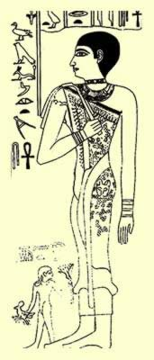

|

Religion was one of the most important social spheres in the Ancient Egypt.
Priest positions were structured as a hierarchy, and depended on the roles that were carried out.
A difference was made between the High and Low clergy. Each kind of clergy served the god in a different way.
There was a clergy composed of doctors, like the Sekhmet priests; sometimes it was magicians, musicians, etc.
Most of the times the doctor was a magician as well.
They didn’t only apply herbs and medicine ointments, but also performed rituals and invocations.
But there must be said that even among doctors, there were different classes as well. Some didn’t belong to a specific clergy. There were doctor-priests, magicians and Heka’s priests or Sau priests.
There was a special group among the doctor-magicians which was composed by those whose role was healing, but who couldn’t be strictly considered doctors due to their social status. It was the case of women and of some lower class men.
They used amulets and magical formulas along with their medicinal compounds. Women were usually also considered to be related with the gift or power of clairvoyance.
Usually the role of the female clergy consisted in delighting the god, singing, dancing, playing musical instruments…
But some women reached quite a higher relevance.
There were some sanctuaries dedicated to goddesses like Hathor, Bastet, Neit...
In the Old Kingdom (2800-2400 BC) there were women who were “Guards of the Treasure”, an utmost responsibility position.
We have knowledge on a few historical examples of these women:
A noble’s daughter from Beni Hasan, in the fifth Dynasty, was proclaimed Great Priestess of Hathor, holding the same position that a male could have obtained.
It must be said that in the fourth and fifth dynasties the Hathor cult was a most important one.
In the temples devoted to the goddesses there were also men, which usually hoarded the highest positions.
Women were not set aside for the goddesses, and they also served the male gods. Those were called Hemet-Neter.
The granddaughter of Jufu (Keops) and the queen of Merytytes were priestesses of Thoth as High Priest, and in the funeral rites of her mother Hetferes II. This is what is told in the inscriptions in her tomb and in the main chamber. She was clothed in panther skin, a classical priest cloting. On the walls she engraved her curriculum. Among her titles there was “She who Sees Horus and Seth”.

Since the fourth Dynasty priestesses were chosen from the higher classes. And they were slowly limited to the funerary services (Hemut-Ka).
Usually this position was inherited.
The Priestess position offered material rewards such like cultivable land and a share of the offerings the temple received.
Another priestess called Tainy, participated in the mysteries of Osiris in Abydos.
Abydos was considered Osiris’ sacred territory. It was a very important religious center at that time. The mysteries of Osiris dealt with the death and resurrection of the god.
Some priestesses were entrusted with welcoming the king -the pharaoh- and were the Guardians of the Sanctuary.
The relationship with the god was mystical instead of physical. They didn’t have to get involved with ‘sacred prostitution’ for the divinity as it was done in some other neighbouring civilizations.
The tasks of the highest grades dealt with presenting the offerings.
The lower grade priestesses supervised the daily life and the maintenance of the temple.
At the top of every priestess’ class we could find the “Chief director (female) of all the Female Personnel from the Temples in High Egypt and Nubia”.”
There was a group of seven women in Edfu and Dendera who represented the Seven Hathor, a group of “fairies” who incarnated the goddess. These women had the title of “perfect, beautiful and curly”.
The women from Buto and Busiris represented those mythological females.

If we compare egyptian women with women from other civilizations in those times, they had a privileged position in Ancient Egypt.Men and women were equal before the law, they could own land, sell, inherit, bequeath… some would even govern.
It seems logical that when a woman reached the throne, as it was the case with Hatshepsut, women would acquire more importance in priesthood, since the female pharaoh would promote their chosen in their priesthood careers.
Hebrew women may also have participated in some branches of egyptian medicine, for example as midwives
From the Middle Kingdom (2400-1800 BC), some women held positions close to the scribes.
Nesi Tanebet-Isheru held the title “She who works in the papyrus scrolls of Amon Ra”.
She might have written compendiums from The Book of the Dead for her family. Another title she obtained after her death was “Glorious Ra’s Spirit”. Those who had driven an heroic or otherwise exemplary life were publically revered. With this title the deceased were merged as a sun ray; thus she merged with it and sailed in the divine boat, forever ploughing through the sky.

The “Bride of God” was the queen. It was believed the divinity would appear under the appearance of her husband’s body so as to conceive with him the future pharaoh. Theogamy was then the basis of the right to sit in the throne.
The Divine Bride was the highest degree, a position which was transformed into the Divine Adorer of Amon-Ra.
The “Hand of God” was a lesser title occupied by those on Top of the Harem (the meaning of the Harem was not the same as it is today): it was related with the goddesses who had a relationship with the creator god Atum. The personification of his hand fertilized through masturbation. In the Harem of God there were both men and women, though it is unknown if they lived together or not.
The title of “Divine Adorer” had always been accompanied by that of The Hand of God. A woman with such a title would be the materialization of the hand of Atum, who extended his creative seed through masturbation.
The Divine Adorer received the Jeperesch crown. She dressed with the royal Ureo on her forehead, and was carried in a palanquin.
Ajnesneferiba held the title of “Female Horus” in a time when the incarnation from this god was only personified by the pharaoh.
Maybe the Divine Adorers usurped power from weak pharaohs. They performed magical-religious rites in which they displayed their strength and control over the apotropaic forces.
They celebrated festivities which were exclusive to the king, like the festivity of the Renovation.
Another title was “Pure Hands”.
Concubines were initiated in the mysteries of the god and could incarnate the goddesses, sometimes through the use of masks. They had to deeply purify themselves.
Those who played instruments attracted the deceased through music. The sistrum would create sounds which were pleasing to the gods. Music had a magical and protective function. There were both male and female singers. There were dancers, acrobats, clappers,...
Henuttawy (1030 BC) was a Singer of Amon-Ra in the XXI Dynasty, who worked in the Amon-Ra temple in Thebes. Her father was the high priest Menkheperre and her grandmother the queen Henuttawy. She was buried in the tomb of Minmose in Deir el-Bahari. In her mummy, found in the Deir el-Bahari cemetry, rests of tobacco and cocaine have been found.
Meresamun (850 BC) was a priestess, singer in the temple of Amon and Divine Adorer in the XXII Dynasty. During her life, the temple of Amon in Thebes had a strong political influence in the Upper Egypt. She belonged to the entourage of the wife of the god...
The God’s nursemaids helped to feed the child and practiced circumcision. They belonged to “child” god cults.
There were funerary priestesses, also the Mourners (who could hold this position their whole lives), the Guardians, the Undertakers (following the Isis-Nephtis outline)...

|
 RSS
RSS